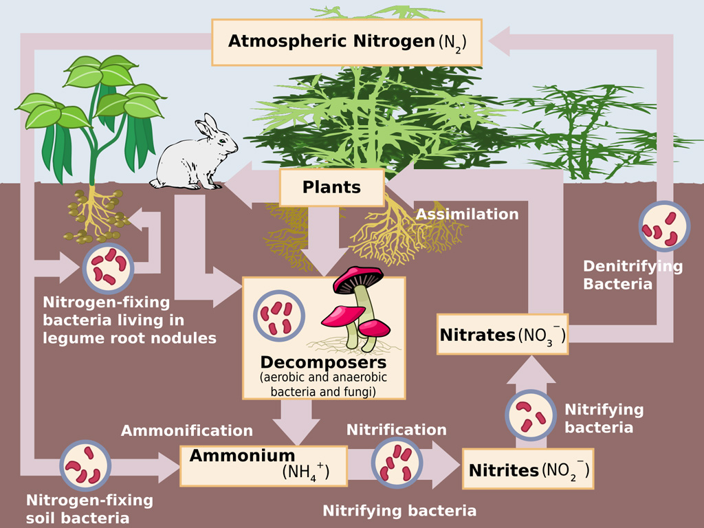
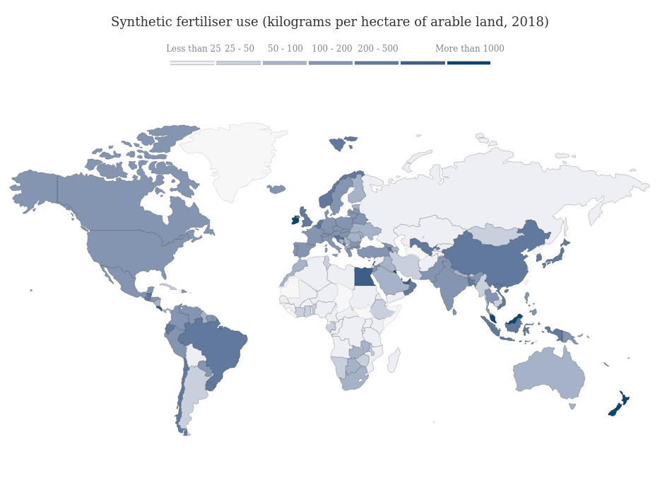
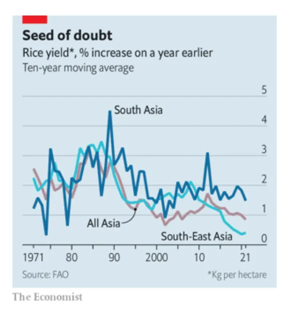

22 Soil
Guardian
The storage potential of one of the Earth’s biggest carbon sinks – soils – may have been overestimated, research shows. This could mean ecosystems on land soaking up less of humanity’s emissions than expected, and more rapid global heating.
The study, based on over 100 experiments, found the opposite. When plant growth increases, soil carbon does not. The finding is significant because the amount of organic carbon stored in soils is about three times that in living plants and double that in the atmosphere. Soils can also store carbon for centuries, whereas plants and trees rot quickly after they die.
When rising CO2 increases plant growth, there is a decrease in soil carbon storage. If soils do absorb less in future, “the speed of global warming could be higher”
Soils, plants and trees are important for carbon levels, but ending the burning of fossil fuels is essential. To stop global warming, we need to stop emissions, because ecosystems only take up a fraction of all the CO2 emissions.
The researchers found that in grasslands, elevated CO2 led to 9% plant growth – less than forests – but soil carbon rose by 8%. Terrier said there has been a lot of discussion about tree planting as a way to tackle the climate crisis. “What I found very concerning in that debate is that people were suggesting planting trees in natural grasslands, savannah, and tundra,” he said. “I think that would be a terrible mistake because, as our results imply, there is a very large potential to increase soil carbon storage in grasslands.”
Given that the land absorbs 30% of the carbon emitted from fossil fuels and deforestation, understanding if that will change in the future matters. Change would be determined by the balance between rising CO2 boosting plant growth and the negative effects of climate change itself, including drought, heatwaves and fires. The evidence to date suggests the biggest change will be the negative effects of global heating on ecosystems
22.1 Soil Depth
No-till farming was developed and promoted in the mid-20th century as an erosion control measure. Under conve
ntional tillage, soil is broken up and mixed mechanically. In no-till farming, soil disturbance is minimized
and crop residues are left on the soil surface. Reducing or eliminating tillage improves water infiltration r
ates and protects against wind and water erosion. Reducing tillage also improves soil structure, allowing “ag
gregates” (intact clumps of soil) to form when they otherwise would have been broken into smaller pieces. Agg
regates are often carbon rich, and are thought to have a role in protecting organic matter from decay.Althoug
h this suggests that eliminating or reducing tillage might be a way to increase the overall amount of carbon
stored in soil, the relationship between tillage and soil carbon storage remains a heavily debated topic. No
fewer than 11 synthesis papers published in the past five years have addressed the relationship between tilla
ge and soil carbon storage.
These papers each analyzed data from hundreds of individual studies. While the synthesis papers analyzed many
of the same studies, they reached a range of conclusions. Some have concluded that tillage has no statistica
lly detectable effect on overall soil carbon storage, while others have identified positive effects or indica
ted that tillage effects depend on other factors such as climate and soil type
Sampling depth is likely a key source of the disagreement. It has two main effects, which we call the “carbon
redistribution effect” and “density change effect”. We’ll describe each in turn.
22.2 Peatland
Gallego-Sala
Peatlands cover just 3% of the world’s land area, but store twice as much carbon as all the trees on Earth combined.
The carbon held in these wetlands has been accumulating for millennia and may be “irrecoverable”. This means that, once released, the carbon in the soil would take centuries to re-establish – way beyond the timescales relevant for tackling climate change.
But the world is losing huge quantities of carbon from peatlands each year. In fact, humans have already pushed the Earth’s peatlands from an overall “sink” of carbon to a “source”. This is mainly due to drainage of tropical peatlands to convert land for farming.
It is now widely accepted that peatlands can play a key role in tackling climate change as one of many potential “nature-based solutions” – both through restoration efforts, but also through “avoided emissions” from protecting pristine peatlands.
Peat is a wetland soil made of partially decomposed plant debris. The soil being saturated is key to its extraordinary stores of carbon.
The water creates “anoxic” conditions in the soil. This lack of oxygen slows down how quickly microbes can break down the organic matter the soil contains. Decomposition without oxygen produces methane, which is why peatlands are natural methane emitters. However, the sluggish pace of decomposition means that peatlands take up carbon more quickly than it is emitted.
Draining a peatland – taking the water table below a certain threshold – triggers a fundamental shift in this ecological balance. With oxygen now available, decomposition speeds up and carbon dioxide (CO2) emissions increase. This turns the peatland into a carbon source.
Additionally, peat is a fuel and, once it dries, it becomes increasingly easy to ignite. Peat fires are now common in drained or drought-affected peatlands all over the world. For example, during El Niño years, dry conditions in Indonesia can contribute to widespread peatland fires, substantially increasing global land-use emissions.
All of these extra emissions increase the account of CO2 in the atmosphere. Peatlands can be responsible for as much as 5-10% of global annual human-caused CO2 emissions.
Restoring, or “rewetting”, peatlands is, therefore, an important route towards recovering the carbon sink function in these ecosystems. It has been shown to be efficient in terms of both land area – these are the most carbon dense ecosystems in the world – and financial cost.
22.3 Land Use Change (LUC)
Independent
A recent study in Nature Communications shows that global demands for commodities, especially in connection with agricultural development, are the main drivers of land use change in the global south.
A land use change is defined as a permanent or long-term conversion in the type of cover of an area of land, for instance from forest to urban use, agricultural crops or savanna, or vice versa. The researchers used modern satellite technology, now able to detect changes such as deforestation in near real time, to evaluate global trends.
They suggest global land use changes may be happening at a much higher rate than previously thought. The authors found that 17 per cent of the Earth’s land surface has undergone change at least once since 1960, which works out to an area the size of Germany every year. Over that period there was a net forest loss of 0.8 million km², while agricultural crops expanded by 1 million km² and rangelands and pastures by 0.9 million km².
Winkler
we analyse the dynamics of global land use change at an unprecedented spatial resolution by combining multiple open data streams (remote sensing, reconstructions and statistics) to create the HIstoric Land Dynamics Assessment + (HILDA +). We estimate that land use change has affected almost a third (32%) of the global land area in just six decades (1960-2019) and, thus, is around four times greater in extent than previously estimated from long-term land change assessments. We also identify geographically diverging land use change processes, with afforestation and cropland abandonment in the Global North and deforestation and agricultural expansion in the South. Here, we show that observed phases of accelerating (~1960–2005) and decelerating (2006–2019) land use change can be explained by the effects of global trade on agricultural production.
Temporal dynamics of global land use change and its relation to globalised markets.
The rate of global land use change was not constant over time. In analysing the temporal dynamics, we identify two different phases: (1) an acceleration phase with an increasing rate of change from 1960 to 2004; and (2) a decreasing rate of change from 2005 to 2019. The transition from constant to rising rates of land use change has been discussed in the context of shifting global food regimes and coincides with a period when global food production changed from agro- technological intensification (driven by the Green Revolution in the 1960s) to the production for globalised markets and increasing trade, especially during the 1990s. We find this acceleration phase to be more distinct in regions of the Global
South, as observed in South America, Africa and Southeast Asia, where production and export of commodity crops have increased, most strikingly since the 2000s. The growing influence of tele-connected markets is found to be a major driver of land use change, parti- cularly deforestation for commodity crops in the Global South. This offshoring of land use change from the Global North to the South is evident in the growing proportion of cropland in the countries of the Global South used for export and consumption outside of their territories. However, the data suggest a rather abrupt change to decreasing rates of land use change in the period from 2005, which is most evident in Africa and South America, regions of the Subtropics and Tropics. We hypothesise that the transition from accelerating to decelerating land use change is related to market developments in the context of the global economic and food crisis 2007–2009. Before the crisis, rising demand for food, animal feed and biofuels as well as increasing oil prices (reaching an all-time high in 2008 at $145.31 per barrel of Crude) stimulated global agricultural production, which enhanced global land use change. In particular, high oil prices made bioenergy crops more competitive and profitable compared to fossil fuels. Increasing demand, mostly in the developed countries of the Global North, spurred bioenergy crop expansion in the Global South (e.g. production of oil crops in Ghana, Argentina, Brazil and Indonesia). Biofuel policies, climatic extremes and export bans led to global food price spikes in 2007–2008 and in 2010, which raised concerns about food security in many import-dependent countries and rapidly growing economies (e.g. the EU, China or India). A wave of large-scale, transboundary land acquisitions and foreign investments in agriculture emerged, mostly targeting sub- Saharan Africa, Southeast Asia and South America 48,55,56 . This development is reflected in the sudden increase in the rate of land use change (during 2000–2005), ensuing fluctuations (during 2006–2010) and sharp decrease (after 2010) in countries of the Global South, e.g. Brazil, Argentina or Ethiopia. We find that the observed slowdown of global land use change after the economic crisis 2007–2009 is mainly caused by a decline in agricultural expansion in the countries of the Global South, particularly pronounced in Argentina, Ghana and Ethiopia. We postulate that the global deceleration of land use change is related to market mechanisms during the economic crisis. With the economic boom coming to an end during the Great Recession, the global demand for commodities dropped. Countries which focussed on the produc- tion of commodity crops for global markets prior to the crisis (e.g. Argentina, Brazil, Ghana or Indonesia), no longer found buyers for their goods, reduced agricultural production and, thus, the rate of agricultural land expansion. The observed sharp decline in the rate of land use change, especially in Africa, may be further caused by a decrease in the number and size of global land acquisitions after the financial crisis in 2007–2009. Since then, hedge funds in land became less common and concerns were raised about unsustainable practices related to transbound- ary land acquisitions (e.g. land/water degradation and displace- ment of rural labour). Resulting incentives from international organisations and exporting countries to limit land trade may have led to the recent decline in large-scale land acquisitions.
Winkler (2021) Global land use changes are four times greater than previously estimated (pdf)
22.3.1 Climate effect of Land Use Change
Kalnay Abstract
The most important anthropogenic influences on climate are the emission of greenhouse gases1 and changes in land use, such as urbanization and agriculture. But it has been difficult to separate these two influences because both tend to increase the daily mean surface temperature. The impact of urbanization has been estimated by comparing observations in cities with those in surrounding rural areas, but the results differ significantly depending on whether population data or satellite measurements of night light are used to classify urban and rural areas. Here we use the difference between trends in observed surface temperatures in the continental United States and the corresponding trends in a reconstruction of surface temperatures determined from a reanalysis of global weather over the past 50 years, which is insensitive to surface observations, to estimate the impact of land-use changes on surface warming. Our results suggest that half of the observed decrease in diurnal temperature range is due to urban and other land-use changes. Moreover, our estimate of 0.27 °C mean surface warming per century due to land-use changes is at least twice as high as previous estimates based on urbanization alone.
Kalnay (2003) Impact of urbanization and land-use change on climate(pdf)
22.4 Fertilizers
Carbon Brief
Fertilisers are helping to degrade [the soil] and not build fertile soils.
The global production of fertilisers is responsible for around 1.4% of annual CO2 emissions, and fertiliser use is a major contributor of non-CO2 greenhouse gas emissions.
Beyond CO2 and water, a plant needs three primary nutrients in large quantities in order to grow: nitrogen, phosphorus and potassium. These nutrients, which are sucked up from the soil by a plant’s root system, have several different roles to play.
Among other things, nitrogen is a major component of chlorophyll, which is needed for photosynthesis, and amino acids, which are crucial for plant development. Phosphorus is heavily involved in the way plants produce energy. Potassium plays a key role in regulating how a plant transports and uses water.
Although nitrogen is the most abundant element on Earth, it is primarily found as “unreactive” nitrogen gas in the atmosphere. Its inert nature means that plants are unable to incorporate this nitrogen into their cells. Rather, plants need a reactive, or “biologically available”, form of the element in order to build new biomass.
In the absence of human intervention, plants maintain a careful balance of nutrients in the soil. Certain microbes live symbiotically with legumes and other plants, taking nitrogen gas from the air and “fixing” it into the forms that plants can use, such as ammonia. The diagram below shows the processes that transform nitrogen into different forms in the soil.

While each of these three major nutrients is naturally found in soils, for thousands of years, humans have been adding more in the form of fertilisers to encourage plant growth and boost crop yields.
Fertilisers can broadly be separated into two categories: organic fertilisers and mineral fertilisers, sometimes referred to as chemical or synthetic fertilisers. Together, nitrogen, phosphorus and potassium fertilisers are known as “NPK fertilisers”.
Today, the world applies more than 100m tonnes of synthetic nitrogen fertiliser to its crops every year. Around half of this is used to boost the production of cereals – predominantly maize, wheat and rice. In addition, around 50m tonnes of phosphorus fertilisers and more than 40m tonnes of potassium are used annually.
Six companies have market caps in the tens of billions of US dollars: Canada’s Nutrien, Australia’s Wesfarmers, US-based CF Industries, SABIC Agri-Nutrients Company (formerly the Saudi Arabian Fertilizer Company), the US-based Mosaic Company and the ICL Group, formerly Israel Chemicals Ltd.
Synthetic fertiliser use is high in the US, Canada and western Europe, where large-scale, mechanised agriculture is the norm. Its use is also high in several large, fast-growing economies, including Brazil, China and India. By contrast, fertiliser use is low across most of Africa, with Egypt being a notable exception.

Use varies widely around the world, depending on the types of crops grown, the soil quality and myriad other factors. Nearly half of fertiliser applied in the US is used on maize fields, while soya crops are responsible for 40% of Brazil’s fertiliser consumption.
83% of fertiliser used in Malaysia is applied to oil palm plantations, while just under 90% of New Zealand fertiliser use is for grasslands. These regional differences extend to the types of fertiliser applied as well. Since soya, as with other legumes, is capable of fixing its own nitrogen, these plantations require higher inputs of phosphorus and lower use of nitrogen fertiliser.
Since 1960, the amount of fertiliser used annually has increased nearly 10-fold. Fertiliser usage have gone hand-in-hand with increasing food yields – global cereal production has grown three- or four-fold in that same period. Had we not been eating high-meat diets, the world could have clearly fed more people with less fertiliser. We wouldn’t have all those livestock emissions if we hadn’t had enough nitrogen to feed all those animals to increase our population.
[Genetic engineering] was the engine of the Green Revolution – the high-yielding genetic varieties – but the fuel of the Green Revolution, to power the engine, was the fertilisers.
The mass adoption of synthetic fertilisers has come at a significant cost to the environment. Because the Haber-Bosch process is carried out at high temperature and pressure, the greenhouse gas emissions associated with it are substantial.
In fact, producing ammonia fertilisers is responsible for about 1% of all global energy use and 1.4% of CO2 emissions – almost equivalent to the emissions of Germany. About 40% of the fossil gas input into the process is burned to fuel the reaction, with the remaining 60% being used as the feedstock.
Although discussions around the environmental impacts of fertilisers tend to focus on nitrogen, the limited quantity of phosphorus in the Earth means that that resource is actually a more pressing concern.
The global cycle of nutrients is completely unbalanced. This is terrible concerning sustainability.
Fertiliser contributes to climate change in several key ways. Energy-intensive extractive and manufacturing processes require the burning of significant amounts of fossil fuels to turn raw materials into usable fertilisers.
Many types of fertiliser are transported across long distances, adding to their greenhouse footprints. As with food-related emissions, transportation makes up only a small fraction of fertilisers’ greenhouse gas emissions – just a few percent of the total, according to Vaneeckhaute.
However, recent research has suggested that the transport emissions associated with the entire food system – including transporting fertilisers, machinery and animal feed – are significantly higher than previously estimated.
When nitrogen-containing fertilisers are applied to a field, some of the reactive nitrogen is taken up by plants, but another portion is lost to the environment. This is leached out into the soils, washed into rivers and other bodies of water by rain or irrigation water or released from the field directly into the atmosphere as vapour. Nutrient runoff can feed algal blooms, releasing methane and leading to oxygen declines in watercourses that can kill fish.
A third portion is lost to the atmosphere as nitrous oxide, a greenhouse gas nearly 300 times as powerful as CO2. Microbes in the soil can break down the nitrogen fertilisers applied to a field to produce nitrous oxide. Nitrous oxide is the third-most abundant greenhouse gas in the atmosphere, after CO2 and methane. Emissions of the gas are predominantly due to agriculture. In 2019, nitrous oxide emissions were about one-third higher than they were in 1990.
Nitrogen applied to crops can also escape to the atmosphere as ammonia or NOx gases, which can form particulate matter, absorbing or reflecting sunlight and producing a cooling effect. The warming and cooling effects of nitrogen approximately cancel each other out. The short-term effects are net cooling, but the very long-term effect is a commitment to net warming,
Overuse of fertilisers can decimate microbial communities in the soil and decrease soil health. And excess phosphorus in the soil can become fixed to organic material or salts, resulting in a form of phosphate that is unusable by plants.
Carbon Brief (2022) What does the world’s reliance on fertilisers mean for climate change?
22.5 Regenerative Agriculture
Grunwald
What exactly is ’Climate-Smart Agriculture?
agriculture and the deforestation that makes room for it generate one-fourth of all greenhouse gas emissions. To meet the Paris targets for 2050, the agriculture sector somehow needs to reduce those emissions by 75 percent while increasing food production by more than 50 percent. Agriculture accounts for only one-ninth of U.S. greenhouse emissions — partly because America’s other sectors emit so much, partly because most deforestation happens abroad, partly because U.S. agriculture is the most efficient on earth — but it’s still a major climate problem. And unlike electricity or transportation, it’s a climate problem we’ve barely even begun to try to solve.
“Climate-smart agriculture” may have started out as a political catchphrase, but it’s about to become an extremely lucrative business. USDA is now preparing to announce the winners of that $1 billion grant program, perhaps as early as this week, and it has begun studying options for the new $20 billion, which it has significant flexibility to decide how to spend. Showering farmers with cash is an American political tradition, and one thing that’s certainly clear is that Biden plans to use carrots rather than sticks to promote his climate agenda in farm country.
“Farmers get really, really nervous about climate policy when they think it’s top-down regulations, something being done to them,” said Robert Bonnie, USDA’s Under Secretary for Farm Production and Conservation. “But when it’s voluntary, collaborative, incentives-based, folks are interested. Making sure this stuff can pencil out for producers is just critical.”
Of course, the atmosphere doesn’t notice whether climate policies pencil out economically for farmers; it’s only affected by whether they reduce heat-trapping emissions. And at times, the Biden team has seemed to equate “climate-smart agriculture” with “regenerative agriculture,” an increasingly popular but scientifically controversial approach that aims to sequester more carbon in soils by farming in greater harmony with nature. The president put in an unexpected plug for soil-protecting “cover crops” during his first address to Congress, and his administration has promoted “conservation tillage,” “rotational grazing” and other regenerative practices designed to rebuild soils and increase soil carbon as well.
Globally, extraordinary momentum is building behind regenerative agriculture — including the United Nations–supported, celebrity-studded Save Soil movement; food conglomerates such as General Mills, Cargill and Danone; fledgling carbon markets that provide financial rewards for emissions-reducing practices; environmental groups disgusted by conventional farming; and even the new King of the United Kingdom. But although there’s solid evidence that regenerative practices can improve soil health and reduce erosion, there’s not yet much evidence they can reliably and permanently sequester carbon underground or mitigate climate change — while there’s plenty of evidence that other practices unrelated to soil carbon can reduce emissions.
Only half the world’s nitrogen fertilizers (which are usually manufactured from fossil fuels) actually end up fertilizing crops. The rest escape into the environment, where they pollute rivers, aquifers and streams, create a dead zone the size of Rhode Island and Delaware combined in the Gulf of Mexico, and foul the air with nitrous oxide, a greenhouse gas 300 times more potent than carbon dioxide.
Here’s a simple idea: Let’s not waste so much fertilizer! It’s expensive for farmers, especially lately, and it’s a disaster for the planet. we already have proven ways to get more nitrogen into plants and less into the environment. Some farmers apply “slow-release fertilizer,” which gives soils more time to absorb nutrients and helps reduce runoff. Many American farmers also have self-driving tractors that use GPS technology and machine learning to apply the optimal amount of fertilizer in the fields where it’s needed.
Grunwald (2022) What exactly is ‘climate-smart agriculture’?
22.6 Rice Fields
Tooze
No crop is as vulnerable to global warming as rice, say scientists at irri. A study in 2004 found that a 1°C increase in minimum temperatures leads to a 10% decline in yields. Rising sea levels, another result of warming, are already causing salt intrusion in low-lying areas of the Mekong delta, eroding rice yields there. Massive floods last year in Pakistan, the world’s fourth-biggest rice exporter, are estimated to have destroyed 15% of its harvest. Rice’s contribution to global warming represents an underappreciated feedback loop. Irrigating paddy fields starves the underlying soil of oxygen. This encourages methane-emitting bacteria to flourish. Consequently, rice production is responsible for 12% of total methane emissions—and 1.5% of total greenhouse-gas emissions, comparable to aviation. Vietnam’s paddy fields produce more carbon equivalent than the country’s transportation.

Rice yields are stangating. If it is to meet 30% rise in rice demand by 2050 global agriculture needs a greener revolution.
22.7 Fungi
Eurekalert
Fungi stores a third of carbon from fossil fuel emissions and could be essential to reaching net zero, new study reveals
Mycorrhizal fungi are responsible for holding up to 36 per cent of yearly global fossil fuel emissions below ground - more than China emits each year
The fungi make up a vast underground network all over the planet underneath grasslands and forests, as well as roads, gardens, and houses on every continent on Earth
It is not only crucial to storing carbon and keeping the planet cooler, but are also essential to global biodiversity
Researchers are now calling for fungi to be considered more heavily in conservation and biodiversity policies, and are investigating whether we can increase how much carbon the soil underneath us can hold
The vast underground network of fungi beneath our feet stores over 13 gigatons of carbon around the world, roughly equivalent to 36 per cent of yearly global fossil fuel emissions, according to new research.
It is widely believed that mycorrhizal fungi could store carbon, as the fungi forms symbiotic relationships with almost all land plants and transports carbon, converted into sugars and fats by the plant, into soil, but until now the true extent of just how much carbon the fungi were storing wasn’t known.
The discovery by a team of scientists, including researchers from the University of Sheffield, that fungi is storing over a third of the carbon created from fossil fuel emissions each year indicates that it could be crucial as nations seek to tackle climate change and reach net zero. Work is now being undertaken to see whether we could increase how much carbon the soil underneath us can store.